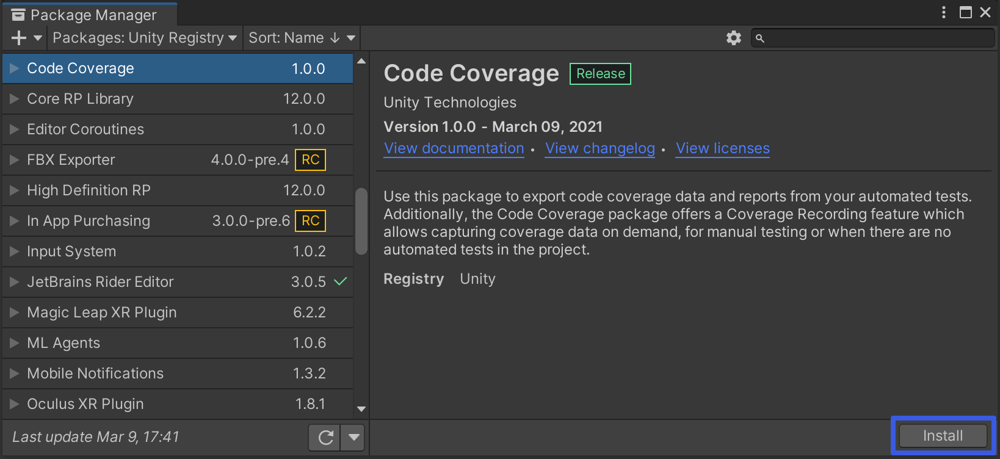

Installing Code Coverage¶
Before you install the package, make sure you have no errors in the Console window (in red text).
From the Unity Package Manager¶
Use the Unity Package Manager to find and install the Code Coverage package.

Alternatively, use the Add (+) dropdown and select Add package from git URL… or Add package by name… and type com.unity.testtools.codecoverage.

To verify that Code Coverage has been installed correctly, open the Code Coverage window (go to Window > Analysis > Code Coverage). If you don’t see the Code Coverage menu item, then Code Coverage did not install correctly.
Manually from the Package Manifest¶
You can also install the Code Coverage package manually. To do this, add a reference to Code Coverage in your project’s Packages/manifest.json file. There are two ways you can reference a specific version of the Code Coverage package, depending on how you use it.
Using a production version of the package¶
You can point the Package Manager at a publicly available version. To do this manually, add it to manifest.json:
"dependencies": {
//...
"com.unity.testtools.codecoverage":"<full version number>"
}
Using a local clone of the package¶
If you want to use a cloned version of the package, you can point the Package Manager at a local folder as the package location:
"dependencies": {
//...
"com.unity.testtools.codecoverage":"file:path/to/package/root"
}
To verify that Code Coverage has been installed correctly, open the Code Coverage window (go to Window > Analysis > Code Coverage). If you don’t see the Code Coverage menu item, then Code Coverage did not install correctly.